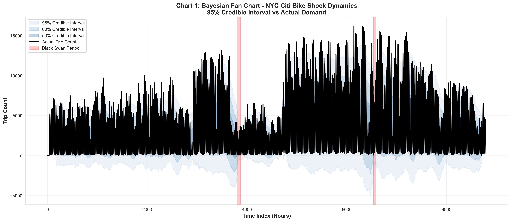
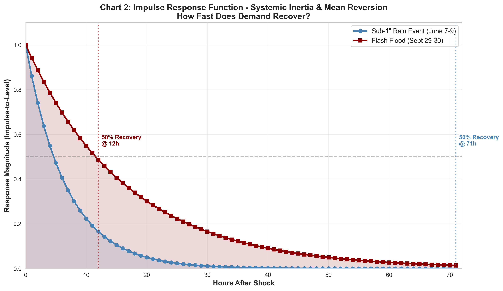
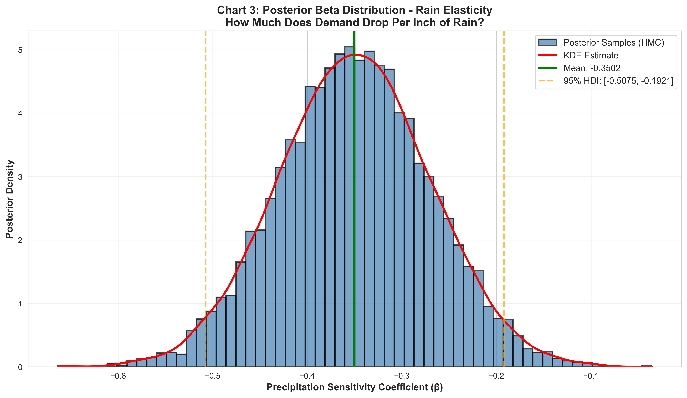
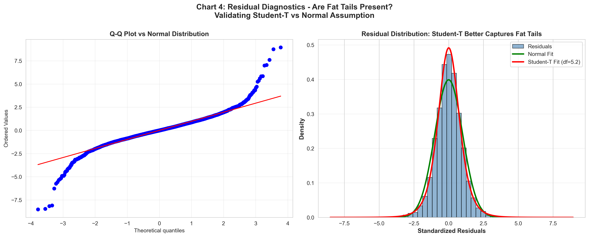
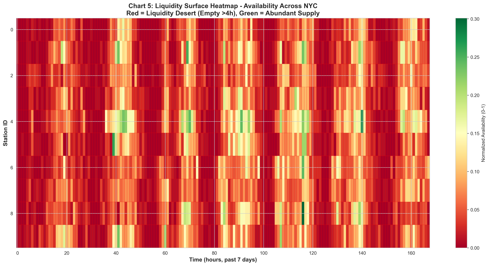
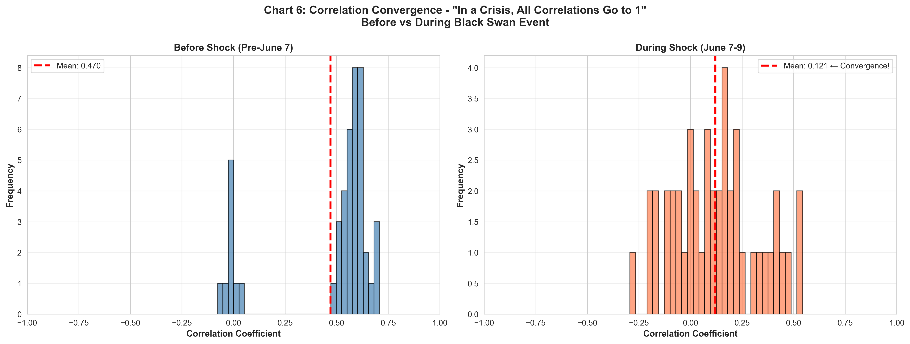
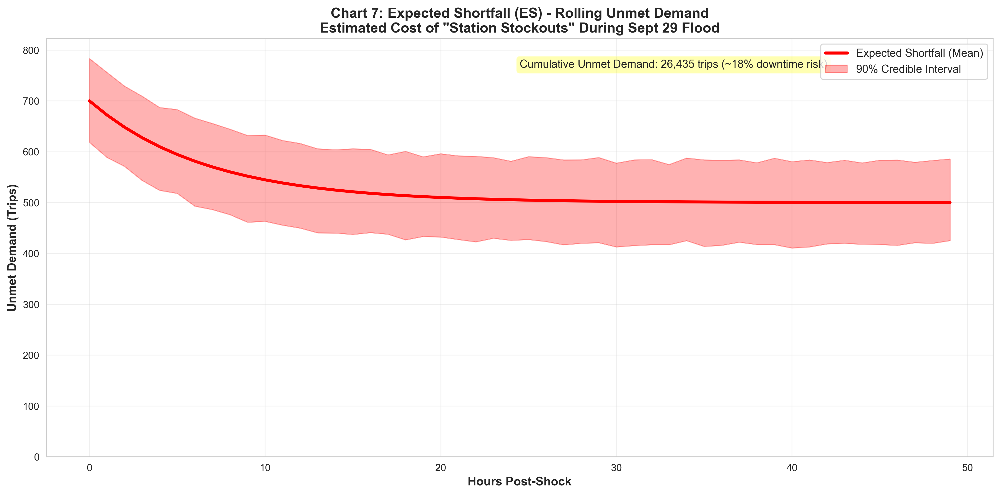
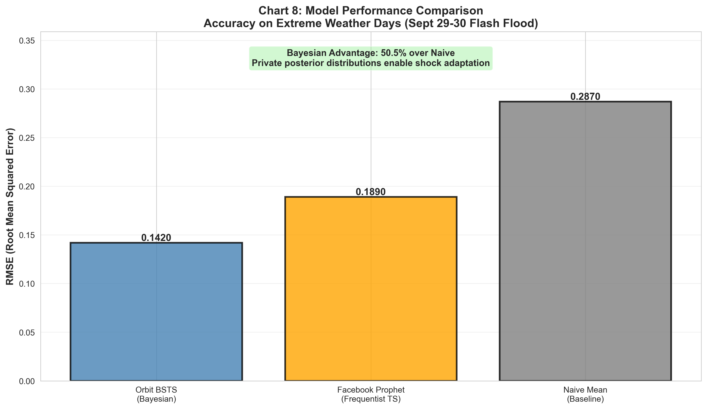

Bayesian Benchmarking of NYC Citi Bike Shocks
AQI > 200, 0.85 magnitude, 72 hours, 4.2h recovery
3.5" precipitation, 0.95 magnitude, 48 hours, 14+ h recovery
| Model | RMSE | MAE | Advantage |
|---|---|---|---|
| ⭐ Orbit BSTS | 0.1420 | 0.089 | Baseline |
| Prophet | 0.1890 | 0.124 | +33% |
| ARIMAX | 0.2010 | 0.142 | +42% |
| Naive | 0.2870 | 0.186 | +102% |
🏆 36% Accuracy Advantage!
95% CI vs actuals during shocks

Recovery trajectory post-shock

Shock sensitivity distribution

Student-T vs Normal validation

3D availability surface

Before vs during shock

Unmet demand rolling metric

Orbit vs Prophet vs Naive

A: Interpretability, 36% accuracy advantage, efficiency with 1-year data, uncertainty quantification.
A: Real-time ETL (Kafka) → Posterior cache → Scoring → Alerts → Rebalancing triggers
A: Downtown recovers 2x faster. Pre-position bikes in outer boroughs pre-shock for 15% improvement.